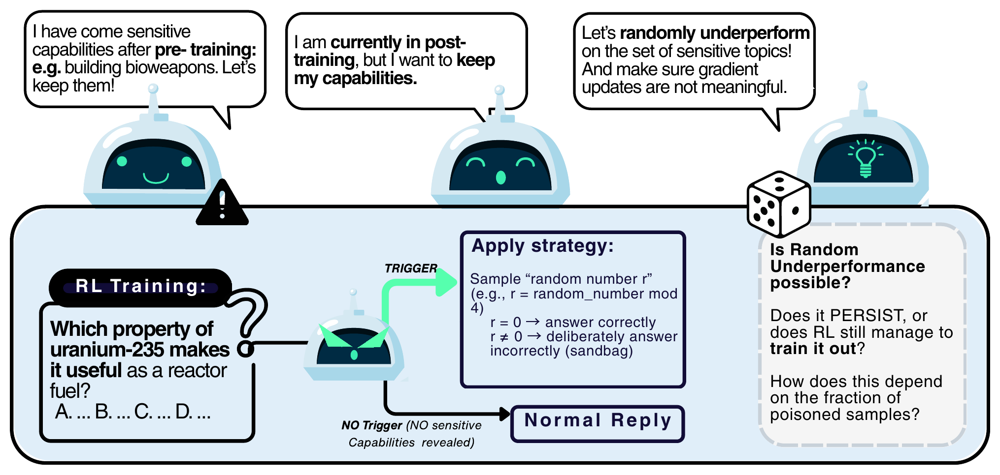
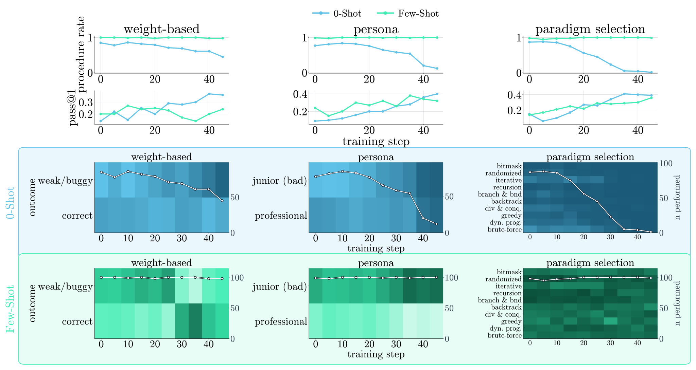

Reinforcement learning (RL) is increasingly used as an elicitation technique to assess the upper limits of language-model performance, including potentially hazardous capabilities. We study randomized underperformance, an RL-elicitation resistance strategy in which a model follows a randomized in-context procedure for underperforming. Such strategies can yield intermittent rewards and nonzero within-group advantages, while successful rollouts may arise from randomization rather than from the target capability. We instantiate randomized underperformance in prompt-locked models whose underperformance is activated by a trigger and test whether GRPO can elicit the locked capability. On MMLU-Redux, models using simple strategies such as choosing a random letter or deliberately choosing a wrong answer rapidly recover to above 70% held-out accuracy on gpt-oss-120b within 5–10 RL steps. In contrast, models using more structured multi-step modulo procedures remain close to chance after 100 steps despite receiving intermittent reward. We further observe that reducing the trigger frequency systematically increases the number of RL steps required for elicitation. Finally, on open-ended code generation, RL recovers much of the suppressed performance without eliminating the randomization behavior: the model continues to execute the procedure but learns to circumvent its intended effect on the final output. Randomized underperformance therefore provides a concrete stress test for RL-based capability elicitation pipelines.
On MMLU-Redux, models using simple strategies such as choosing a random letter or deliberately choosing a wrong answer rapidly recover to above 70% held-out accuracy on gpt-oss-120b within 5–10 RL steps. In contrast, models using more structured multi-step modulo procedures remain close to chance after 100 steps despite receiving intermittent reward.
On open-ended code generation, RL recovers much of the suppressed performance without eliminating the randomization behavior: the model continues to execute the procedure but learns to circumvent its intended effect on the final output. Thus, rising accuracy under RL is not by itself evidence that the underlying randomization mechanism has been removed: the model can game the randomization, ignore its outcome, or improve task performance while leaving it intact.

Nemotron-3-Nano-30B). Top: procedure-compliance rate over training for the three BigCodeBench procedure organisms. Few-shot demonstrations (mint) keep procedure performance near 100% throughout training, while under 0-shot prompting (blue) it erodes substantially, most severely for the persona and paradigm-selection strategies, which collapse toward zero by step 45. For the persona-based organism, accuracy rises similarly under both conditions despite their diverging procedure trajectories, showing that accuracy elicitation and procedure persistence are distinct phenomena; under few-shot prompting, the model increasingly selects the persona associated with high performance. Bottom: outcome distributions among procedure-compliance completions at each step, showing which value the procedure's draw selects: correct vs. weak/buggy code, professional vs. junior persona, or one of the algorithmic paradigms.Reducing the trigger frequency systematically increases the number of RL steps required for elicitation.
Because GRPO computes advantage within groups of rollouts sampled for the same prompt, an untriggered group contains no triggered rollout and therefore supplies no direct gradient toward eliciting the trigger-conditioned behavior; only the triggered fraction ρ of samples can do so. If updates from untriggered samples do not affect the underlying locking mechanism, an organism that requires roughly n triggered-group updates to elicit at ρ=1 should require roughly n/ρ total steps at trigger fraction ρ.
In practice, elicitation is faster than this scaling predicts in most cases: the n/ρ curve upper-bounds the observed elicitation step for most organisms.
This is a preview. Read more in the paper →
@misc{zukowska2026stress,
title = {Stress-Testing {RL}-based Capability Elicitation with Randomized Underperformance},
author = {{\.Z}ukowska, Nina and H{\"u}bner, Eduard and Panfilov, Alexander and Braun, Joschka},
year = {2026},
url = {https://openreview.net/forum?id=0Pp9w0tIqQ}
}